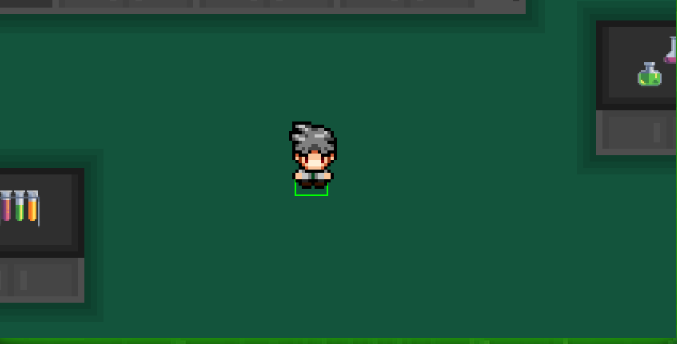
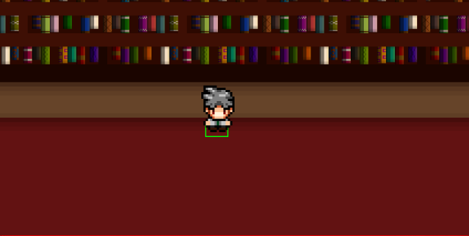
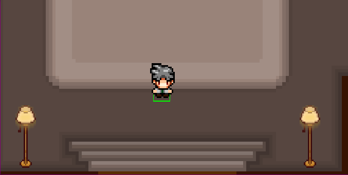
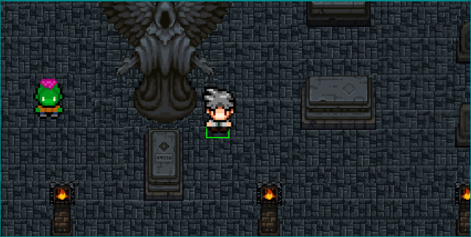

Objetivo do jogo
Para conseguir vencer e chegar ao final do jogo, o Dr. Juno Nox precisa escapar
de seu próprio laboratório, localizado em sua casa no meio de uma floresta. Mas
por que fugir de sua própria residência?
O doutor sempre foi um cientísta muito profissional, porém descuidou-se ao executar alguns
experimentos, que resultaram em criaturas que ganharam consciência própria. Refletindo sobre
a situação naqual se encontravam, as invenções de Juno se revoltaram contra o ele, o
perseguindo dentro de sua própria casa.
Para escapar ainda com vida, Dr. Juno Nox faz de seu laboratório uma área livre de monstros,
esquecendo apenas que as chaves para destrancar as portas estão espalhadas por outros cômodos.
Dessa maneira, é necessário achar as 3 chaves que o farão conseguir sair de sua propriedade
assombrada.
Para encontrar as chaves e concluir o desafio do jogo, é necessário explorar os cômodos e
destrancar as portas dentro de 5 minutos, seguindo a ordem predefinida pela lógica do jogo.
É importante lembrar que o jogador pode ser derrotado através de contato com monstros ou
esgotamento do tempo.
Como jogar?
Movimentação
Feita através das teclas W, A, S, D, sendo que:
Referente a movimentação para cima (eixo Y).
Referente a movimentação à esquerda (eixo X).
Referente a movimentação para baixo (eixo Y).
Referente a movimentação à direita (eixo X).
Pause
Para pausar o jogo, basta acionar a tecla de espaço. Ao pausar o jogo, além do congelamento da tela, o tempo também é congelado, disponibilizando melhor funcionalidade.
Coletar itens
Para coletar itens, como chaves e corações, basta passar pelos mesmos, sendo que a coleta é feita através da colisão entre o personagem jogável e o item disposto.
Fases
Fase 1 - O Laboratório 🧪
É a fase inicial do jogo, sendo que não possue nenhum inimigo que cause dano ao personagem jogável. A única maneira de perder o jogo nessa fase é através do esgotamento de tempo. Para que o jogador de continuidade ao fluxo do jogo, é necessário encontrar a chave que desbloqueia a próxima fase. Após encontrar o item, um botão aparece abaixo da tela de jogo, sendo que o mesmo leva à fase seguinte ao ser clicado.
Fase 2 - A Biblioteca 📚
É a segunda fase do jogo, sendo que possue três inimigos que causam dano ao personagem jogável. Além do esgotamento de tempo, é possível perder o jogo através da interação (toque) com inimigos. Caso o jogador perca uma das três vidas, é possível recarregá-las coletando vidas extras dispostas no mapa. Para que o jogador de continuidade ao fluxo do jogo, é necessário encontrar a chave que desbloqueia a próxima fase. Após encontrar o item, um botão aparece abaixo da tela de jogo, sendo que o mesmo leva à fase seguinte ao ser clicado.
Fase 3 - O Hall de Entrada 🚪
É a terceira fase do jogo, sendo que possue três inimigos que causam dano ao personagem jogável. Além do esgotamento de tempo, é possível perder o jogo através da interação (toque) com inimigos. Caso o jogador perca uma das três vidas, é possível recarregá-las coletando vidas extras dispostas no mapa. Para que o jogador de continuidade ao fluxo do jogo, é necessário encontrar a chave que desbloqueia a próxima fase. Após encontrar o item, um botão aparece abaixo da tela de jogo, sendo que o mesmo leva à fase seguinte ao ser clicado.
Fase 4 - O Cemitério ⚰️
É a última fase do jogo, sendo que possue quatro inimigos que causam dano ao personagem jogável (dois por contato e dois através de projéteis). Além do esgotamento de tempo, é possível perder o jogo através da interação (toque) com inimigos. Para que o jogador de finalize o jogo, é necessário sobreviver na fase durante, pelo menos 15 segundos. Após esse tempo determinado, o portão do cemitério se abre, possibilitando a fuga final do jogador.